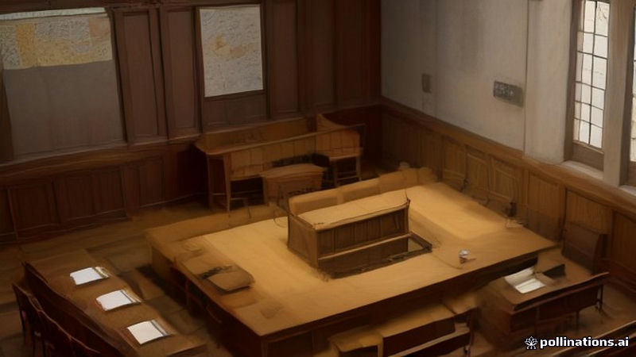

স্পেনের সুপ্রিম কোর্টে পুইগডেমন্টের মামলা বন্ধ, ডিসেম্বর ফিরে আসার পথ সুগম
France 24, DW · 2026-11-25
AI-generated illustrationকোর্ট ২০২৪ সালের অম্নেসি আইন প্রয়োগ করে অপরাধমূলক মামলা বাতিল করেছে, ফলে প্রাক্তন নেতা ডিসেম্বর ১২ তারিখে বার্সেলোনায় ফিরে আসতে পারেন।
স্পেনের সুপ্রিম কোর্ট ২০২৪ সালে পার্লামেন্টে পাশ হওয়া বিতর্কিত অম্নেসি আইন প্রয়োগ করে প্রাক্তন ক্যাটালান স্বতন্ত্রতাবাদী নেতা কার্লেস পুইগডেমন্টের ২০১৭ সালের স্বাধীনতা প্রচেষ্টার সঙ্গে যুক্ত অপরাধমূলক মামলা বন্ধ করেছে, France 24 অনুসারে।
এই রায়টি রবিবার নির্ধারিত ত্বরিত সাধারণ নির্বাচনের আগে প্রকাশিত হয়েছে এবং অম্নেসি আইনের সম্পূর্ণ বাস্তবায়নের শেষ ধাপ হিসেবে বিবেচিত, France 24 জানিয়েছে।
DW অনুযায়ী, পুইগডেমন্ট প্রায় দশ বছর পর, ১২ ডিসেম্বর বার্সেলোনায় ফিরে আসার পরিকল্পনা প্রকাশ করেছেন, কারণ আদালত তার বিরুদ্ধে মামলা বাদ দিয়েছে।
Written by AI from facts reported by the outlets named above. It may contain errors; check the original reporting.English version
Spain's Supreme Court ends case against Puigdemont, clearing path for December return
Spain's Supreme Court has invoked the controversial amnesty law passed by parliament in 2024 to close criminal proceedings against former Catalan separatist leader Carles Puigdemont, related to the 2017 independence bid, according to France 24.
The decision arrives just before a snap general election scheduled for Sunday, marking the final step in implementing the amnesty legislation, France 24 reported.
DW says Puigdemont announced he will return to Barcelona on December 12, after nearly a decade in exile, now that the case has been dismissed.